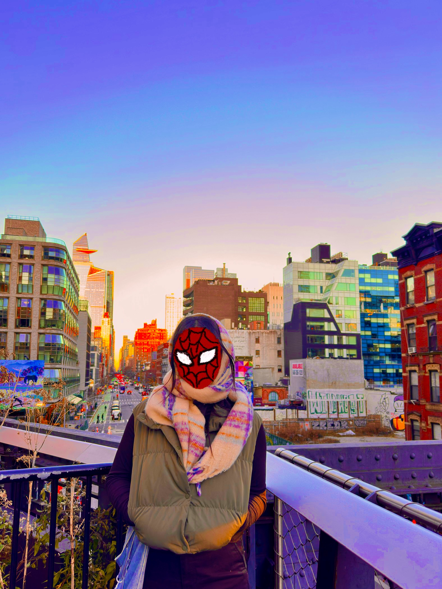

...wants a honey spicy chicken sandwich, to bask in the comforting scent of a barnes & noble, and to perfect her strawberry puree recipe.
currently pursuing a degree in psychological & brain sciences with a minor in media arts & design at ucsb, ella luk is an interdisciplinary artist driven by her desire for eternalizing the things that make her *feel* in any sort of medium. jack of all trades, master of some (or so she thinks), ella's art spans across multiple forms—ranging from ceramics and graphite to ui/ux design, video editing, and film photography. in her free time, she dances, reads heaps of fiction, journals like her life depends on it, and spends a lot of time on her skateboard.